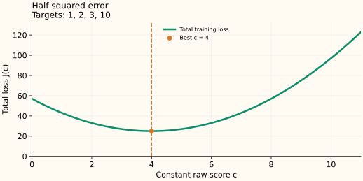

Squared Error: Why the Best Constant Is the Mean
Squared error asks a constant prediction to balance the sizes of its overpredictions and underpredictions. That balance produces the mean, not merely a convenient default.
The loss and its prediction scale
The raw score $F$ is the reported prediction. For one observed target $y$, use half squared error:
The factor $1/2$ simplifies derivatives. Ordinary squared error and mean squared error have the same best constant because multiplying the whole objective by a positive number does not change where it is minimized.
The score derivative is $\partial\ell/\partial F=F-y$, so the negative-gradient correction target is $y-F$. Underprediction requests an increase; overprediction requests a decrease. Larger errors request larger corrections.
Derive the best constant
Every row receives the same prediction $c$. Keep the observed $y_i$ fixed and add their losses:
For each term, the chain rule gives $\tfrac12\cdot2(y_i-c)\cdot(-1)=c-y_i$. Summing those derivatives gives
At the optimum the aggregate slope is zero:
Why is this a minimum rather than a maximum? The second derivative is $J''(c)=n>0$. The objective curves upward everywhere, so this is its unique global minimum.
Read the balance in four observations
For targets $[1,2,3,10]$, the mean is $c^*=16/4=4$. Their residuals are $[-3,-2,-1,6]$. The first three rows together request $-6$; the last requests $+6$. No net first-order correction remains.
The total half squared loss is $(9+4+1+36)/2=25$. Predicting 3 instead gives $(4+1+0+49)/2=27$. The distant target 10 pulls the optimum above the three small targets because its error grows quadratically.


What changes with observation weights?
With fixed weights $w_i\ge0$ and positive total weight, minimize $J(c)=\tfrac12\sum_i w_i(y_i-c)^2$. The same derivative calculation gives
This is the weighted mean. It follows from the objective, rather than from replacing the targets with weighted target values and taking an ordinary average.
What this tells you about a fitted model
A model restricted to one constant estimates the training mean. With a flexible function of $x$, minimizing expected squared loss targets the conditional mean $\mathbb E[Y\mid x]$, when the relevant moments exist. Large target errors can dominate the fit; compare absolute error and Huber loss when that influence is undesirable.
Sources and reproducible figures
The examples and plots are computed by this reproduction script, which also checks the stated minima. Inspect the figure data.